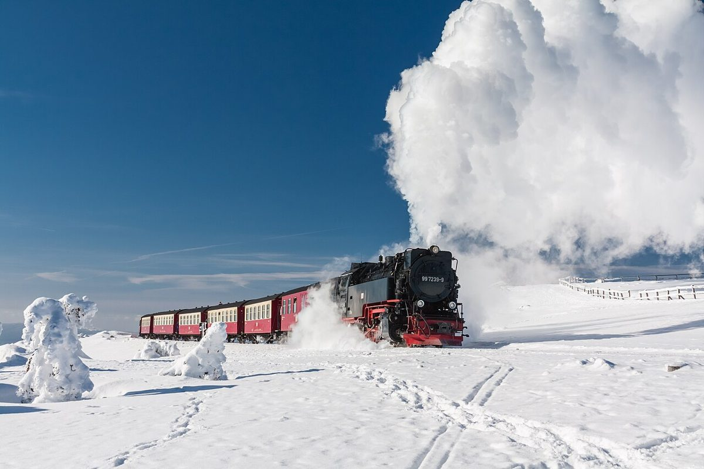

Découvrez le Brocken dans le Harz : Entre Nature et Histoire

Le Brocken, situé dans le massif du Harz en Allemagne, est une destination incontournable pour les amateurs de nature et d’histoire. Avec ses paysages envoûtants et son patrimoine culturel, ce sommet mythique offre une expérience unique. Voici un guide complet pour explorer cette merveille de la Saxe-Anhalt.
Anreise : Comment se rendre au Brocken
Le Brocken est accessible à pied, en train à vapeur ou en vélo. Le moyen le plus emblématique est le Brockenbahn, un train à vapeur historique qui part de Wernigerode ou de Drei Annen Hohne. Pour les randonneurs, les sentiers comme le Goetheweg ou le Harzer Hexenstieg offrent des itinéraires pittoresques. Si vous préférez la voiture, garez-vous à Schierke, un village de montagne, puis continuez à pied ou en train.
Beste Reisezeit : Quand visiter le Brocken
Le Brocken est magnifique toute l’année, mais chaque saison a son charme. En hiver, la montagne se pare d’un manteau de neige, idéal pour les amateurs de paysages hivernaux et de sports de neige. Le printemps et l’été sont parfaits pour la randonnée et les panoramas verdoyants. L’automne, avec ses couleurs chaudes, offre une expérience visuelle incroyable.
Highlights : Les incontournables du Brocken
- Le sommet du Brocken : À 1 141 mètres d’altitude, le sommet offre une vue imprenable sur le parc national du Harz. Par temps clair, vous pouvez même apercevoir des villes voisines.
- Le Brockenmuseum : Ce musée retrace l’histoire fascinante de la montagne, des légendes locales à son rôle pendant la guerre froide.
- La maison de Goethes : Située près du sommet, cette cabane rappelle la visite du célèbre écrivain allemand Johann Wolfgang von Goethe.
- Les paysages environnants : Explorez les forêts mystiques, les cours d’eau cristallins et les villages pittoresques du Harz.
- Le Brockenbahn : Une expérience nostalgique à bord de ce train historique.
Essen : Que déguster dans le Harz
La région du Harz est réputée pour sa cuisine locale et ses spécialités. Ne manquez pas de goûter au Harzer Käse, un fromage fort et typique de la région. Le Brockenteller, un plat copieux à base de pommes de terre, viande et légumes, est idéal après une journée de randonnée. Pour les amateurs de bière, essayez les brasseries locales qui proposent des bières artisanales. Enfin, terminez votre repas avec une délicieuse Harzer Kräuterlikör, une liqueur aux herbes.
Conseils pratiques
Prévoyez des vêtements adaptés à la météo changeante du Brocken, même en été. Les chaussures de randonnée sont indispensables pour explorer les sentiers. Si vous prenez le Brockenbahn, réservez votre billet à l’avance, surtout en haute saison. Enfin, respectez la nature en suivant les sentiers balisés et en emportant vos déchets.
Le Brocken est une destination magique qui combine aventure, histoire et gastronomie. Que vous soyez randonneur, amateur de culture ou simplement en quête de tranquillité, cette montagne légendaire saura vous captiver.
Haiktec
- Guide Pratique pour Maîtres de Chiens Occupés: 7 Stratégies Simples pour un Quotidien Harmonieux
- Planificateur de Voyage Côte Baltique & Mer du Nord : Budget, Itinéraire & Checkliste
- L'Essentiel du Voyage en Allemagne : Découvrir le Rhin, Francfort et Heidelberg
Text mit KI erstellt und automatisch geprueft.